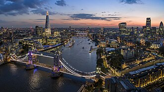
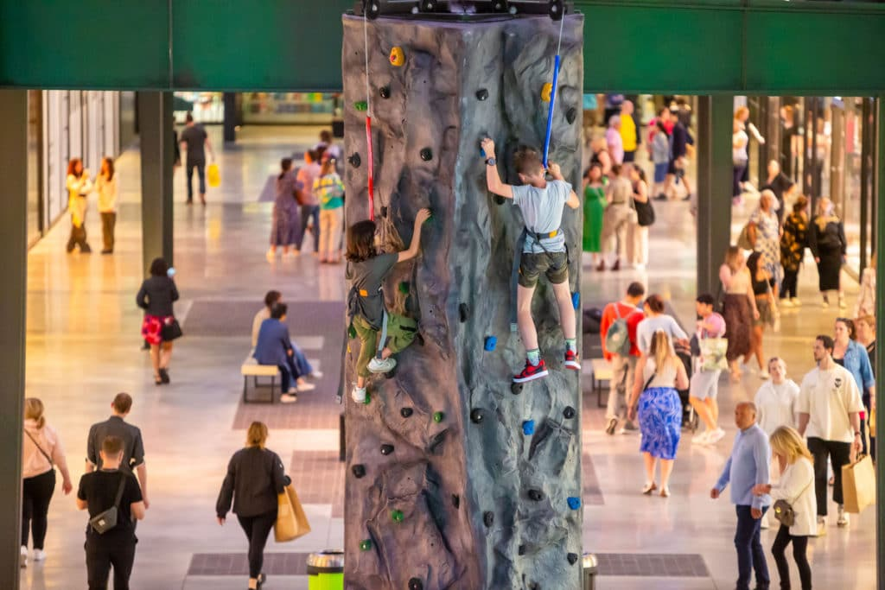
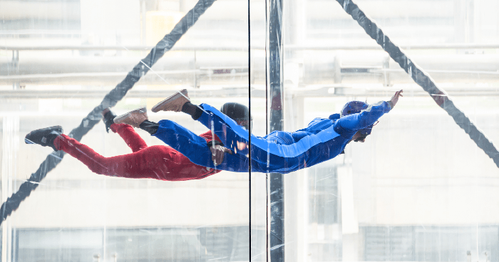

Londres
Aventura intensaVejo o outro lado da cidade, o lado radiacal, mostrando que até em cidades sofisticadas, podem ter sua adrenalina e aventura.

Paris
Aventura pouco intensaVisite a cidade luz e descubra que existe um lado radical e divertido, além dessa luz romântica que a cidade transmite.

Nova York
Aventura pouco intensaNova York é uma cidade que nunca dorme, e para quem gosta de aventura, ela oferece diversas opções de esportes radicais e atividades emocionantes.

Rio de Janeiro
Aventura moderadaAlém do Cristo Redentos, Pão de Açúcar e das praias, o Rio de Janeiro oferece diversas atividades radicais, que vão te surpreender e te fazer sentir a adrenalina correndo pelo seu corpo.

Cidade do México
Aventura leveAqui além de comemorar o "El Día de los Muertos", você pode sentir calafrios e sensações como se a alma tivesse saído do corpo, com as diversas atividades radicais que a cidade oferece.

Ushuaia
Aventura leve-moderadaTalves aqui a neve te traga aventuras e sensações que você nunca sentiu antes, com esportes radicais e atividades que vão te fazer sentir a adrenalina correndo pelo seu corpo.
Londres


Curiosidade: Londres é atravessada pelo famoso Rio Tâmisa, que corta a cidade e passa por alguns de seus monumentos mais conhecidos, como a Tower Bridge, o Big Ben e o London Eye. O rio possui grande importância histórica para o desenvolvimento comercial e cultural da capital britânica.
Prática do Gripped London: Localizado em Hounslow, o Gripped London é um parque de aventuras ao ar livre que oferece diversas atividades, como circuitos de cordas nas alturas, tirolesas, escorregadores e desafios em redes suspensas. É um espaço voltado para diversão, aventura e superação de desafios.
História: Londres é uma das cidades mais antigas e importantes da Europa. Fundada pelos romanos por volta do ano 43 d.C., com o nome de Londinium, tornou-se um dos principais centros políticos, econômicos e culturais do mundo. Atualmente, é conhecida por seus monumentos históricos, pela família real britânica e por sua diversidade cultural.
Outro Esporte Praticado: Escalada indoor (Indoor Climbing), uma atividade bastante popular em Londres, praticada em centros especializados com paredes artificiais de diferentes alturas e dificuldades. É uma modalidade que exige força, equilíbrio, concentração e habilidade para superar obstáculos.
Paris


Curiosidade: Paris é conhecida como a Cidade Luz (La Ville Lumière) e abriga a famosa Torre Eiffel, um dos monumentos mais visitados do mundo. A cidade também é cortada pelo Rio Sena, que oferece belas paisagens e passeios de barco.
Prática do Arvorismo e Tirolesa: Nos arredores de Paris, existem parques de aventura que oferecem circuitos de arvorismo entre árvores, pontes suspensas e tirolesas. Essas atividades permitem explorar a natureza de uma maneira divertida e cheia de adrenalina.
História: Paris tem origem em um antigo povoado celta chamado Lutécia, habitado pelos Parisii. Durante a Idade Média, tornou-se um importante centro político, cultural e econômico da França. Ao longo dos séculos, ganhou destaque mundial por sua arquitetura, arte, moda e monumentos históricos.
Outro Esporte Praticado: Paraquedismo indoor (queda livre em túnel de vento), uma atividade que simula a sensação de queda livre por meio de fortes correntes de ar, permitindo experimentar a adrenalina do paraquedismo sem precisar saltar de um avião.
Nova York


Curiosidade: Nova York é conhecida como a cidade que nunca dorme, por sua intensa movimentação durante o dia e a noite. A cidade abriga a famosa Estátua da Liberdade, o Central Park e a Times Square, além de ser um dos maiores centros culturais e financeiros do mundo.
Prática do Jet Ski: Nas águas ao redor de Nova York, especialmente próximas ao Rio Hudson e à baía de Nova York, é possível praticar passeios de jet ski. A atividade proporciona uma experiência de aventura com belas vistas do horizonte da cidade e de seus monumentos.
História: Nova York foi fundada pelos holandeses em 1624, inicialmente com o nome de Nova Amsterdã. Em 1664, passou para o domínio inglês e recebeu o nome de Nova York. Ao longo dos séculos, tornou-se um importante destino de imigrantes e um dos principais centros econômicos e culturais do planeta.
Outro Esporte Praticado: Escalada urbana (Urban Climbing), modalidade que envolve desafios de escalada em estruturas artificiais e paredes especializadas. Nova York possui diversos centros de escalada indoor, onde os praticantes podem testar força, equilíbrio e habilidade.
Cidade do México


Curiosidade: A Cidade do México foi construída sobre as ruínas da antiga cidade asteca de Tenochtitlán. Um de seus lugares mais famosos é o Zócalo, uma das maiores praças públicas do mundo, cercada por importantes construções históricas.
Prática do Caiaque: Nos canais de Xochimilco, na Cidade do México, é possível praticar atividades aquáticas, incluindo passeios de caiaque. A experiência permite explorar os canais históricos, observar a natureza e conhecer uma das regiões culturais mais tradicionais da cidade.
História: A Cidade do México foi fundada pelos astecas em 1325, com o nome de Tenochtitlán. Em 1521, foi conquistada pelos espanhóis e reconstruída sobre as antigas estruturas astecas. Atualmente, é a capital do México e um dos maiores centros urbanos e culturais da América Latina.
Outro Esporte Praticado: Balonismo, atividade praticada nos arredores da Cidade do México, especialmente na região de Teotihuacán. Os passeios de balão permitem observar do alto as famosas Pirâmides do Sol e da Lua e apreciar a paisagem arqueológica da região.
Ushuaia


Curiosidade: Ushuaia é conhecida como a cidade mais austral do mundo, localizada na Terra do Fogo, na Argentina. Cercada pela Cordilheira dos Andes e pelo Canal de Beagle, possui paisagens impressionantes, com montanhas nevadas, geleiras e florestas.
Prática do Snowboard: Ushuaia é um destino muito procurado para a prática de snowboard, especialmente no Cerro Castor, um dos centros de esqui mais famosos da América do Sul. A atividade consiste em deslizar pela neve utilizando uma prancha presa aos pés, proporcionando aventura e adrenalina em meio às paisagens da Patagônia.
História: Ushuaia foi fundada oficialmente em 1884 e teve grande importância na ocupação argentina da região da Terra do Fogo. A cidade também ficou conhecida por abrigar um antigo presídio, que funcionou entre 1902 e 1947. Atualmente, é um importante destino turístico e ponto de partida para expedições à Antártida.
Outro Esporte Praticado: Trenó puxado por cães (Dog Sledding), uma atividade de aventura realizada em paisagens nevadas, na qual trenós são conduzidos por cães treinados através de trilhas na neve. É uma experiência tradicional de regiões frias e bastante procurada por turistas na Patagônia e Ushuaia.